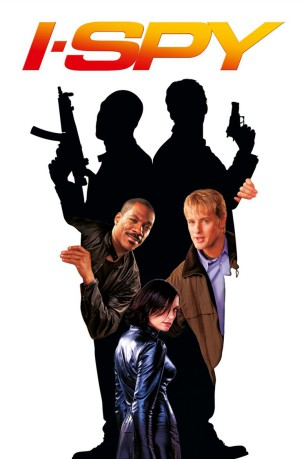

#5255 I Spy
 
 IMDB-Wertung: 5.4 / 10
IMDB-Wertung: 5.4 / 10  Tomatometer: 16
Tomatometer: 16  Metascore: 0
Metascore: 0 
Sie können sich absolut nicht leiden, doch sie müssen zusammenarbeiten, um die Welt vor einer Katastrophe zu retten: Der leicht trottelige CIA-Agent Alex Scott und der großmäulige Boxchampion Kelly Robinson sind die Einzigen, die dem ungarischen Supergangster Gundars das Handwerk legen können. Der eiskalte Gundars hat aus einer streng geheimen Waffenschmiede der USA den Prototyp eines völlig neuartigen Spionageflugzeugs gestohlen. In wenigen Tagen will der Schurke den Superflieger meistbietend unter den Terroristen und Diktatoren dieser Welt versteigern. Das muss unbedingt verhindert werden! Und so schleust Kelly, der vom boxbegeisterten Gundars auf eine Party in seiner Budapester Stadtvilla eingeladen wurde, den CIA-Mann Alex undercover bei Gundars ein. Doch bevor Alex den Aufenthaltsort des Flugzeugs herausfinden kann, fliegt seine Tarnung auf - woran der chaotische Kelly nicht ganz unschuldig ist.
Jahr: 2002
Dauer: 92 Minuten
FSK: 12
Land: USA Studio: Columbia PicturesTonspuren: DD5.1 - ,
Untertitel:
Auflösung: 1080p (1920x1040) Größe: 4321 MB
Genre: Action, Thriller, Komödie, Abenteuer
Regisseur:  Betty Thomas
Betty Thomas
Drehbuch: Scott Derrickson
Soundtrack:
Darsteller:
 Eddie Murphy als Kelly
Eddie Murphy als Kelly Owen Wilson als Alex
Owen Wilson als Alex Famke Janssen als Rachel
Famke Janssen als Rachel Malcolm McDowell als Gundars
Malcolm McDowell als Gundars Gary Cole als Carlos
Gary Cole als Carlos- Phill Lewis als Jerry
 Viv Leacock als T.J.
Viv Leacock als T.J. Keith Dallas als Lunchbox
Keith Dallas als Lunchbox- Tate Taylor als Lieutenant Percy
 Lynda Boyd als Edna
Lynda Boyd als Edna Bill Mondy als McIntyre
Bill Mondy als McIntyre- Sugar Ray Leonard als Vegas Commentator
- Joe Cortez als Vegas Referee
 Darren Shahlavi als Cedric Mills
Darren Shahlavi als Cedric Mills Dana Lee als Zhu Tam
Dana Lee als Zhu Tam- Ray Galletti als BNS Man
 Mike Dopud als Jim
Mike Dopud als Jim Aleks Paunovic als Bob
Aleks Paunovic als Bob Crystal Lowe als Beautiful Girl
Crystal Lowe als Beautiful Girl Peter Linka als Master of Ceremonies
Peter Linka als Master of Ceremonies- Csaba Lucas als Hungarian Cop
 Yaroslav Poverlo als Hungarian Cop
Yaroslav Poverlo als Hungarian Cop Glenn Ennis als Gundars' Posse
Glenn Ennis als Gundars' Posse Layton Morrison als Gundars' Posse
Layton Morrison als Gundars' Posse Kevin Rushton als Gundars' Posse
Kevin Rushton als Gundars' Posse- Simone Bailly als Vegas Showgirl
- Angela Uyeda als Vegas Showgirl
- Taras Kostyuk als Siberian Guard #2 , uncredited
- Klaudia Kovacs als Hungarian Operator , uncredited
- Larry Merchant als Vegas Commentator
- Jimmy Lennon Jr. als Vegas Ring Announcer
- Gordon Racette als Europe Referee
- Steve Albert als Europe Announcer
- Bobby Czyz als Europe Announcer
- Blake 'The Blade' Lirette als Himself
- Edmond Kato Wong als Zhu Tam's Pilot
- Gus Lynch als General Elmo Tucker
- Malik McCall als Kelly's Pilot
- Kendall Saunders als Beautiful Girl
- Péter Vida als Vespa Guy
- J.B. Bivens als BNS Equipment Technician
- Steve Lesko als Massage Patron
- Zinaid Memisevic als Tent Chef
- John Scott als Spa Patron
- Norman Edge als Spa Patron
- Bernard J. Manuel als Abi
- Mihály Tabanyi als Hungarian Violinist
- Eric Bryson als Gundars' Posse
- George Josef als Gundars' Posse
- Roger Lewis als Gundars' Posse
Datei: X:\2002\I Spy (2002, FSK12, 1920x1040).mkv seit 05.01.2017
Festplatte: HD 1996-2002
 Es gibt insgesamt 93 Filme in der Gruppe '2002'
Es gibt insgesamt 93 Filme in der Gruppe '2002'